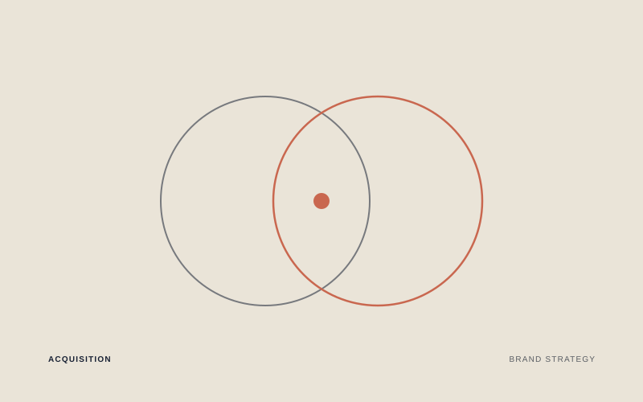

What e.l.f. actually bought when it bought Rhode
In August 2025, e.l.f. Beauty closed a $1B acquisition of Rhode, Hailey Bieber's skincare brand: up to $800M at close plus a $200M earnout tied to growth. Rhode was the number one skincare brand by earned media value in 2024, growing EMV 367% year over year, almost entirely without traditional advertising. What e.l.f. bought wasn't a supply chain; it was a way of earning attention at scale that its own engine was finding more expensive to produce every year.
Watch on LinkedIn →